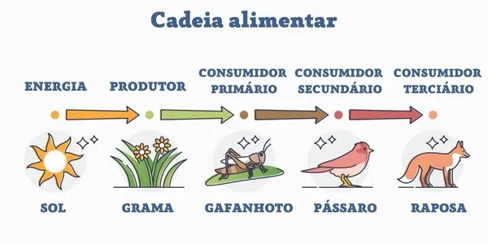
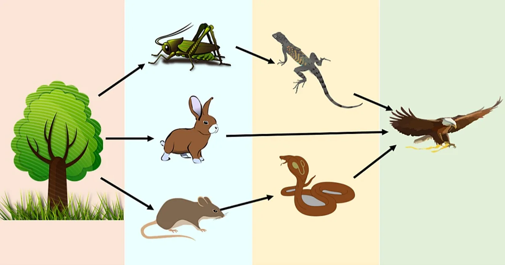
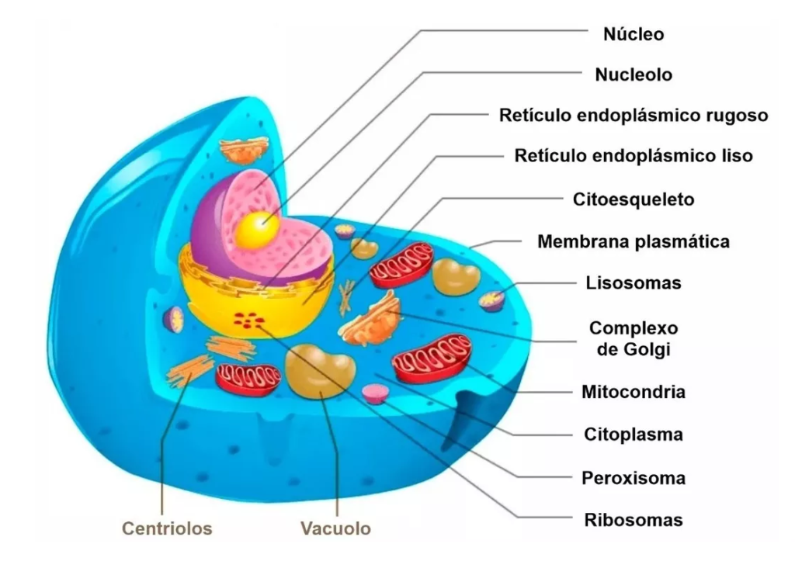

Animais são eucariontes, e divergiram do mesmo grupo dos protozoários flagelados que deram origem aos fungos e aos coanoflagelados. Estes últimos são especialmente próximos por possuírem células com "colarinhos" aparecendo somente entre eles e as esponjas, e raramente em certas outras formas de animais. Em todos estes grupos, as células móveis, geralmente os gametas, possuem um único flagelo posterior com ultra-estrutura similar.
Existem cerca de 1 200 000 espécies de animais já descritas, divididos em 54 filos, a grande maioria podemos ver sem a ajuda do microscópio, mas, existem também aqueles microscópicos, mas uma característica entre todos esses seres-vivos é que todos são pluricelulares. Os dois mais antigos grupos de animais: vertebrados e invertebrados, são divididos de acordo com a presença ou a ausência da coluna vertebral.
Eles tambem podem ser divididos devido aos seus abitos alimentares (carnivoros, herbívoros, granívoros, insectívoros, omnívoros).
Os animais carnívoros alimentam-se de carne de outros animais (lobo, leão, raposa…).
Os animais herbívoros alimentam-se de plantas (cabras, vacas, burros, coelhos…)
Os animais granívoros alimentam-se de grãos (galinhas, pombas, rolas, papagaios, piriquitos, canários…).
Os animais insectívoros alimentam-se à base de insectos (aranha, sapo, morcego, camaleão...)
Os animais omnívoros alimentam-se de produtos de origem animal e vegetal (urso, macaco, porco, homem...).
Uma cadeia alimentar é a sequência de alimentação entre os seres vivos, na qual uns alimentam-se dos outros, garantindo sua sobrevivência.
A cadeia alimentar representa uma sequência de seres vivos na qual um organismo serve de alimento para o outro. Por meio dessa cadeia, ocorre a transferência de matéria e energia no ecossistema. As cadeias alimentares são constituídas por diversos organismos, que ocupam diferentes posições ou níveis tróficos, de acordo com a forma como se alimentam.
A teia alimentar pode ser definida como um conjunto de cadeias alimentares de um determinado ecossistema.
Os produtores são aqueles organismos que são capazes de produzir seu próprio alimento, tais como plantas e algas. Já os consumidores são aqueles seres que necessitam alimentar-se de outros seres para obter energia. Os consumidores são chamados de primários quando se alimentam de produtores, de secundários quando se alimentam de consumidores primários e assim por diante.
A teia alimentar representa um conjunto de cadeias alimentares interligadas.
A teia alimentar representa um fluxo multidirecional, diferentemente da cadeia, que segue um fluxo unidirecional. Ela permite a passagem da matéria e da energia pelos ecossistemas.
Veja que na teia acima alguns organismos podem ocupar diferentes níveis tróficos dentro do ecossistema.
Analisando uma teia alimentar, podemos perceber que as relações tróficas de um ecossistema são muito mais complexas do que aquelas demonstradas em uma única cadeia.
Na teia alimentar de pastejo, o primeiro organismo a ser consumido são os seres autótrofos, consumidos por herbívoros pastadores, por sua vez consumidos por carnívoros.Um exemplo de teia alimentar de pastejo é aquela em que o boi se alimenta do pasto, sendo ele o consumidor primário, e o ser humano, por sua vez, se alimenta da carne do boi, se tornando o consumidor secundário.
A teia alimentar de detritos, onde a base é a matéria orgânica não viva, decorrente da decomposição de corpos de vegetais e de animais e seus excrementos, que são processados por fungos e bactérias, sendo por fim consumidos por detritívoros, como a minhoca. São liberadas na forma de nutrientes para as plantas, ou na forma de detritos que serão consumidos por organismos detritívoros, por sua vez consumidos por carnívoros.
As células animais são células eucarióticas. A célula animal é envolvida pela membrana plasmática que delimita o seu conteúdo e controla a entrada e saída de substâncias. Entre a membrana plasmática e o núcleo da célula animal está o citoplasma.
Nessa região observamos a presença das organelas como os ribossomos, lisossomos, centríolos, mitocôndrias, citoplasmáticas e do chamado citoesqueleto etc. Este último é constituído por proteínas que formam uma espécie de rede.Cada organela presente na célula desempenha uma função específica.
O núcleo celular contém o material genético, na forma de cromossomos. Como a célula animal é eucarionte, o núcleo é delimitado por membrana.
Centríolos: relacionados com o processo de divisão celular.
Complexo de Golgi: armazena, modifica e libera substâncias.além disso exporta proteínas sintetizadas no retículo endoplasmático rugoso e tambem origina os lisossomos.
Lisossomos: estruturas responsáveis pela digestão celular.
Mitocôndrias: estrutura responsável pela respiração celular e a produção de energia. Devido a sua função, as mitocôndrias são frequentemente denominadas “casas de força” das células.
Peroxissomos: estrutura arredondada responsável pelo armazenamento de enzimas
Retículo endoplasmático: pode ser classificado em liso (agranular) ou rugoso (granular). Este último caracteriza-se pela presença de ribossomos aderidos à sua membrana e são responsáveis pelo transporte de proteínas e a síntese de moléculas orgânicas.
Vacúolos: responsáveis pela reserva energética e o armazenamento de substâncias.
Ribossomos: estrutura responsável pela produção e síntese de proteínas.
Citoplasma: região mais volumosa, onde se encontram o núcleo e as organelas celulares.
Membrana Plasmática: estrutura celular fina que delimita a célula sendo responsável pela saída e entrada de sustâncias proteger as estruturas celulares internas.
Nucléolo: Coordena os processos de reprodução celular através da síntese de proteínas.
Núcleo Celular: estrutura esférica onde se encontra o DNA.